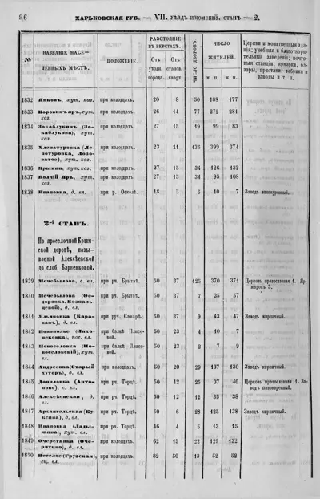

Передмова
Географічне положення
Країна: Україна
Область: Донецька
Район: Краматорський
Територіальна громада: Лиманська міська громада
Код КАТОТТГ: UA14120110220094682
Населення: 736 станом на 2001 рік
Площа: 3.06 км²
Густота населення: 240.5 осіб/км² станом на 2001 рік
Поштовий індекс: 84412
Телефонний код: +3806261
Географічні координати: 49°12′33″ пн. ш. 37°35′50″ сх. д.
Середня висота над рівнем моря: 80 м
Адреса ради: 84411, Донецька обл., Краматорський р-н, с. Рубці, вул. Центральна, 35
{kind=link}
В'їзд до села Лозове. Фото за 2012 рік
Село розташоване в північному сході Донеччини, у складі Рубцівського старостинського округу Лиманської міської громади (колишній Краснолиманський район) Краматорського району, переважна більшість - українці та росіяни, офіційні мови - українська та російська.
{kind=link}
Панорама села Лозове. Фото за 2013 рік
Походження назви, історичні карти та документи
Давайте заглянемо в історію, повернемося в ті далекі часи, коли виникло село. Перші згадки про Лозове в архівних документах датуються ще в ХVІ столітті. Точна дата заснування села невідома, оскільки офіційні архівні дані не зберегли первинних метричних записів, але воно було вперше включене до адміністративного обліку в складі Краматорського району після реформи 1923 року.
Відома легенда, яка передається з вуст в уста. За часів російсько - турецької війни, яка проходила і на наших землях, браві козаки намагалися вигнати турецьких вояків. Один з них, тікаючи, загубив шляпу, і поселення стало називатися Шляпатурівка (від слів “шляпа” і “турка”).
Має місце і більш ймовірне походження назви хутора Хлєботурівка - “хлєб” і суфікса “турівка”: перша частина назви - хуторяни займалися хліборобством; друга частина назви могла відображати особливості місцевості, такі як наявність річки (Журавка, Оскіл), озера Лиман чи пагорбів.
Назва ж села Лозове походить від слова «лоза», що вказує на первісні зарості лоз у прибережних лісосмугах поблизу водойм. Назва “Лозове” відображає мальовничі зарості дикої лози в заплавних лісосмугах, де й виникли перші поселення.
Село сягає давнини, як і інші села. Точна дата заснування Лозового невідома. Ймовірно, село виникло наприкінці XVIII - на початку ХІХ століття як аграрне поселення на території Катеринославської (пізніше - Юзівської) губернії Російської імперії. На початку існування село представляло собою невелику групу хат серед степових і лісових масивів Донецької надрічної долини. У середені ХІХ століття у Лозовому були здебільшого дерев'яні будинки із двох кімнат. Долівка, змазана глиною. Кожна хата красувалася різнобарв'ям вишитих та тканих рушників, адже в кожній хаті жінки пряли, вишивали, займалися переважно хліборобством і скотарством. Географічно Лозове лежало поблизу невеличких річок і боліт, що давало можливість обробляти поля й випасати худобу.
На картах Плану Генерального Межування (ПГМ) Харківської губернії Ізюмського повіту за 1784, 1785, 1788 роки населений пункт ще не був позначений.
{kind=link}
Карта ПГМ Ізюмського повіту Харківської губернії за 1784 рік
{kind=link}
Карта ПГМ Ізюмського повіту Харківської губернії за 1785 рік
{kind=link}
Карта ПГМ Ізюмського повіту Харківської губернії за 1788 рік
На картах Плану Генерального Межування (ПГМ) Харківської губернії Ізюмського повіту за 1842 рік населений пункт позначено як хутір Хлепотуровка (70 домоволодінь)
{kind=link}
Карта ПГМ Ізюмського повіту Харківської губернії за 1842 рік
В пам'ятній книжці Харківської губернії за 1862 рік сторінка 54 населений пункт позначено як хутір Хлеботуров Шандриголівської волості Ізюмського уїзду.
Також відомо, що у 1864 році у хуторі Лозоватий Шандриголівської волості Ізюмського повіту було 30 дворів. В них проживало 54 чоловіки та 39 жінок.
{kind=link}
Пам'ятна книжка Харківської губернії за 1862 рік
На картах Плану Генерального Межування (ПГМ) Харківської губернії Ізюмського повіту за 1868 рік населений пункт позначено як хутір Лозоватий (13 домоволодінь)
{kind=link}
Карта ПГМ Ізюмського повіту Харківської губернії за 1868 рік
В кнізі Список населених місць Російської імперії Харківська губернія випуск 46 за відомостями 1864-1869 року населений пункт позначено як Хлепатуровка (Лепотуровка, Лозоватое) має 135 дворів, 399 чоловіків, 374 жінки.
{kind=link}
Список населених місць Російської імперії Харківська губернія випуск 46 за відомостями 1864-1869 року
У 1885 році населений пункт позначено як колишній державний хутір Хлепатуровка (Лозовая) при річці Оскіл, який налічував 183 двори, 1020 мешканців.
Джерело: Вікіпедія Шандриголівська волость 1885 рік
У 1889 році у хуторі Лозоватоє (Хлєпатуровка) побудована церква Пророко-Іллінська (дерев'яна), архітектор Ф.І.Данілов, її будували парафіяни на свої пожертвування.

Перелік храмів Харківської Єпархії на 1917 рік
{kind=link}
Пророко-Іллінська церква. Архівне фото
{kind=link}
Сучасна Пророко-Іллінська церква. Фото за 2012 рік
У 1914 році хутір Лозоватоє - одне з найбільших поселень волості - 1884 мешканці.
Старшиною волості був Іван Карпович Фоменко, волосним писарем - Максим Корнійович Литвинов, головою волосного суду - Ілля Олексійович Стряпчий.
Джерело: Вікіпедія Шандриголівська волость 1914 рік
У 1918 році на Німецькій карті триверстовці квадрат 24-16 населений пункт позначено як Лозоватий (Лепотурівка)
{kind=link}
Німецька карта триверстовка квадрат 24-16 за 1918 рік
Постановою ВУЦВК від 7 березня 1923 року було проведено нове районування Української СРР із заснуванням округів і районів, але із залишенням губерній. Хутір Лозоватий (точна назва не відома) входив до складу Харківської губернії Ізюмського округу Шандригайлівського району, а з 1 серпня 1925 року, на підставі рішення IX Всеукраїнського З'їзду Рад, розподіл на губернії скасовано і, таким чином, здійснено перехід до триступеневого поділу: округ, район, сільрада. Постановою від 2 вересня 1930 року з 15 вересня 1930 року всі округи були повністю ліквідовані

Карта Харківської губернії за 1923 рік
17 липня 1932 року утворено Донецьку область, а приблизно в 1935 році село стало частиною Краматорського району Донецької області
На картах Другої Світової війни 1942 року населений пункт позначено як Лозовоє.
{kind=link}
Карта генштабу СРСР Квадрат М-37-099 за 1942 рік

Німецька карта 500м квадрат M-37-100-A за 1942 рік
2001 рік - станом на останню переписну оцінку в селі Лозове мешкало 736 осіб.
Джерело: Вікіпедія Лозове (Краматорський район)
З 1944 року по 2016 рік район навивався Краснолиманський
З 19 травня 2016 року Відповідно до Постанови Верховної Ради України №4085 "Про перейменування окремих населених пунктів та районів" Краснолиманський район перейменовано в Лиманський
17 липня 2020 року Відповідно до Постанови Верховної Ради України №807-IX від 17 липня 2020 року "Про утворення та ліквідацію районів", Лиманський район був ліквідований та увійшов до складу Краматорського району.
Сільське господарство
На початку ХХ століття село Лозове залишалося типовим українським сільським поселенням. Жителі переважно займалися землеробством; поступово вводилися нові знаряддя праці, зростало значення волів у господарстві.
Край славився родючими землями, на яких вирощували хліб. Виникла потреба у млині, тому у 1914 році на території села було збудовано олійницю і млин, господарем якого був Андрій Капуста. Споконвіку наше село славиться і трудівниками.
{kind=link}
Олійниця 1914 року. Фото за 2012 рік
У роки колективізації (1928-1932 р.р.) і тихого тоталітаризму село не вирізнялося масштабними промисловими об’єктами, головним заняттям мешканців залишалося сільське господарство.
У 1930 році були організовані дві польові бригади, які знаходилися по обидва береги річки Журавки. Люди у той час охоче працювали. До сходу сонця поспішали на городину, яка розкинулася від Кравчих аж до залізничної станції. Городина поливалася з озера Лиман. Працювали ланками, між якими проводилися змагання. За перемогу ланкових нагороджували преміями у вигляді худоби, грошей, продуктів харчування.
У 1950-1960 роках було збудовано ферми. У людей значно покращилися побутові умови життя. Довгий час на птахофермі працювала Сафонова Зінаїда Іванівна. Відомою дояркою була Лень Пелагея Григорівна.
В усі часи наші односельці були знатними хліборобами. Є сімейні династії: Ведь Макар Іванович, Ведь Данило Іванович, Ведь Свирид Іванович, Кузнєцов Іван Іванович, Гончаренко Василь Іванович.
У 1950-1970-х роках село було одним із колишніх колгоспів (радгоспів) Донецької області, де місцеві жителі працювали на зернових, бурякових і тваринницьких фермах. Умови життя покращувалися: з’явилися електрика, школа, будинок культури та медична дільниця. За радянських часів відзначалися також соціалістичні змагання хліборобів та колгоспників. Друкованих архівних свідчень про конкретні події у Лозовому тих років мало збереглося, але типові проблеми - гострий дефіцит продовольства у 1930-і роки, припинилися масові голодомори, а пізніше - колективізація та подальша механізація сільського господарства - сформували характер економіки села. У 80-х роках розпочалося будівництво тваринницького комплексу. Очолював будівництво директор радгоспу “Дружба” Луженцов Володимир Миколайович. З’явилися нові робочі місця, масово стали приїжджати люди, населення зростало. Було збудовано гуртожиток та квартири для мешканців. КСП "Дружба" було ліквідовано у 1999 році. У вересні 2020 року на його місці було створено СТОВ "Дружба" (директор Кряжев І. Б.).
Після здобуття Україною незалежності у 1991 році село Лозове, як і більшість сіл Донеччини, опинилося в складних економічних умовах. Колгоспи - радгоспи зазнали реформи: з’явилися приватні фермери та одноосібники. Оскільки інфраструктура була розвинена слабко, багато молодих мешканців виїжджали на роботу у великі міста (Луганськ, Донецьк, Дніпропетровськ) чи за кордон. З часом населення села почало зменшуватися через міграцію та старіння покоління. Місцева економіка залишалася сільськогосподарською: вирощували зернові, овочі, займалися бджільництвом. Значної промисловості чи великих підприємств у самому селі не було, тому багато жителів орендували паї, тримали худобу й корів.
Робота магазинів
Жоден населений пункт не обходився без магазину. Мешканці села добре пам'ятають Баглик Ганну Яківну, яка працювала у місцевому трактирі (будівлі пана Хандія)
{kind=link}
Трактир в будівлі пана Хандія. Архівне фото
Вона сама випікала хліб, готувала закуски. Пізніше було відкрито два магазини і один ларьок. У 50-х роках продавцем була Сафонова Катерина Митрофанівна, потім Олексенко Катерина Петрівна, Дячкін Василь Дмитрович - ветеран Великої Вітчизняної війни. Добрим словом і з великою повагою лозівчани згадують Максимченко Антоніну Григорівну, яка працювала продавцем Рубцівського СільПО.
{kind=link}
Господарчий магазин. Архівне фото Чудної З.М
Робота була не з легких. На той час підсобних працівників не було, тому їй самій доводилося носити товар на плечах. Завжди вимоглива до себе, вона сумлінно виконувала свої обов'язки, вивчала попит населення, виїжджала з товаром на ферми, базар. Неодноразово виходила переможцем змагань між магазинами Краснолиманського РайПО. Нагороджувалася преміями, їй присвоєно звання "Кращий працівник".
У 1970 році було збудовано і відкрито новий магазин. Найбільше у торгівлі пропрацювала Ніна Кузьмівна Лобода - з 1967 по 1993 рік, Чикало Валентина Іванівна
З 1964 по 1974 рік водієм РайПО з 37-річним стажем був Чикало Анатолій Андрійович.
В роки незалежності України працювали особисті підприємці: Гудзенко М.В., Гудзенко О.П. продуктовий та господарчий магазини; Ружинська Л. продуктовий магазин; Москот О. продуктовий магазин; Ведь Ю.С. продуктовий ларьок.
{kind=link}
Магазин Вагончик. Фото за 2012 рік
{kind=link}
Магазин Вулик 2005-2013. Фото за 2012 рік
Робота пошти, ощадбанку
Отримати листа, телеграму, газету чи журнал допомагали населенню працівники пошти: Акименко Прокопій Степанович, Гончаренко Поліна Григорівна, Василенко Уляна Дмитрівна, Лисаченко Ніна Михайлівна.
Раніше пошту з с.Рубці доставляла на конях Швець Анастасія Володимирівна. Населення обслуговували Кузнецова Ніна Василівна, Шедрикова Ганна Олексіївна та поштар Єнь Інна Вікторівна. За часів радянської влади поштове відділення знаходилися в приміщенні вузла зв'язку. Там же знаходився і ВАТ "Державний ощадний банк України" 2870/038, де працювала Чикало Валентина Іванівна (точні терміни функціонування не встановлені), який з часом був зачинений, а пошта була перенесена в будинок пана Хандія. Згодом пошту перенесли в приміщення школи. З 2021 року поштове відділення №84412 закрили і зробили Краматорське пересувне відділення Укрпошти.
{kind=link}
Пошта в будинку пана Хандія. Фото за 2012 рік
Фельдшерсько - акушерський пункт
З 1946 року почав свою роботу ФАП. Завідувачем був Топчій Іван Федотович, акушерка Топчій Марія Тихонівна.
Знаходився ФАП у старому будинку (нині в ньому мешкає Здєльнік М.Л.). З 1946 року санітаркою працювала Савченко Катерина Давидівна, потім Курмаз Ніна Пилипівна, яка пропрацювала до 1962 року. З 1962 року і до самої пенсії сумлінно виконувала обов'язки санітарки Лобода Марфа Фоминична. Привітна жінка, гарний працівник, віддана дружина, з чоловіком Андрієм Марковичем у шлюбі прожили 45 років, виховали двох дочок і сина.
Любили і поважали односельці Олексенко Раїсу Іванівну, Бєстову Катерину Михайлівну, Савельєву Світлану Іванівну, Тамару Василівну - медсестер ФАПу та Галушку Владислава Олеговича - медбрата ФАПу, які сумлінно працювали і лікували лозівчан.
{kind=link}
ФАП у будинку №6. Фото за 2016 рік
Сільська бібліотека
3 архівних документів м.Харкова відомо, що у 1909 році у селі було відкрито земську бібліотеку. Сучасна бібліотека почала діяти з 1955 року. Знаходилася вона у приміщенні сільського клубу, називалася "Лозівська приклубна бібліотека". У кутку стояли дві великі шафи, які замикалися навісними замками. Перед шафами стояв стіл, за яким бібліотекар записувала у формуляри читачам книги.
Першим бібліотекарем була Чикало Тамара Андріївна, молода дівчина, після закінчення школи. Через два роки вона вступила до Донецького медичного інституту і стала дитячим лікарем. Посаду Тамари Андріївни посіла Сидоріна Віра Іванівна. Вона пропрацювала до 1960 року. Потім вступила до Слов’янського педагогічного інституту, закінчивши його, стала учителем.
В кінці 1960 року приїхала у село сім’я Сироватських. Олексій Миколайович - вчитель історії, Тетяна Василівна за професією бібліотекар. Вона і стала працювати в приклубній сільській бібліотеці. На той час бібліотечний фонд налічував 700 екземплярів книг, який з часом збільшився, тому бібліотеку перемістили в інше приміщення. І стала вона називатися сільською бібліотекою. Сироватська Тетяна Василівна пропрацювала в Лозівській бібліотеці 21 рік. За період її роботи фонд бібліотеки зріс до 11 тисяч екземплярів. Тетяна Василівна неодноразово була нагороджена почесними грамотами: республіканськими, обласними, районними. У 1979 році одержала Диплом про присвоєння бібліотеці звання культурно - освітницької установи відмінної роботи. У травні 1981 року пішла на пенсію.
{kind=link}
Бібліотекар Сироватська Тетяна Василівна за роботою. Архівне фото
Її місце посіла Здєльнік Марія Леонтіївна, яка в цьому ж році закінчила Донецьке КПУ з професії бібліотекар. Марія Леонтіївна і зараз працює в Лозівській сільській бібліотеці. При централізації бібліотечної системи, бібліотека стала Лозівським філіалом №13 - філію Лиманської централізованої бібліотечної системи (ЦБС). Кожен рік бібліотечний фонд зростав і в 1987 році бібліотеку перенесли у приміщення нового дитячого садочку, який було збудовано у 1985 році. Бібліотека зайняла дві просторі кімнати. У 2003 році, за рішенням Рубцівської сільської ради, бібліотеку переселили в одну із квартир житлового масиву (буд. 18, кв. 14). Бібліотечний фонд налічував 12585 екземплярів книг і обслуговував 300 читачів. Книги були розміщені за систематичним каталогом - за галузями знань з відповідною системою бібліотечно - бібліографічної класифікації. Оформлювались тематичні виставки, новинки літератури, проводились свята з участю школи та клубу – Дні хліба, Зелені свята, Івана Купала, інші народні обряди східноукраїнського регіону. Організовувались дні ремонту книг.
Бібліотека припинила своє існування. Точна дата невідома. Книжковий фонд був переданий у школу та філію Красномиманської централізованої бібліотечної системи.
Фольклорний колектив "Сива зозуленька"
В сільському клубі (директори Ситніченко Наталя Григорівна, Єфімцева Інесса, Єніна Світлана Іванівна, Попова Ольга Віталіївна) села Лозова діє народний фольклорний ансамбль "Сива зозуленька". Колектив заснований за час роботи Наталі Григорівни. Він і нині складається переважно з місцевих жінок-співачок (їх називають "майстринями" народного мистецтва)
{kind=link}
Фольклорний колектив "Сива зозуленька"
Історія цього колективу налічує не один десяток років, але звання народний вони здобули в 2010 році, а в квітні цього ж року вони з гідністю підтвердили почесне звання "народний". Середній вік учасниць цього колективу від 65 до 80 років. Але колектив не сидить на лаві запасних він активно діючий. "Сива зозуленька" - постійний учасник сільських та міських заходів. Ансамбль регулярно бере участь у святах і фестивалях Лиманської громади та прилеглих сіл (зокрема, демонструючи традиційний побут та вишивку). В квітні 2013 року був почесним гостем на фестивалі "Відлуння рідного краю". Також колектив практикує виїзні та обмінні концерти. 16 липня 2013 року о 10.00 год. на ґанку Рубцівського територіального центру соціального обслуговування м.Красний Лиман, стаціонарне відділення постійного проживання за участю народного фольклорного ансамблю "Сива зозуленька" відбулася концертна програма "Співаємо душею" для мешканців та працівників інтернату. Це приблизно 56 чоловік. Ансамбль порадував присутніх, заспівавши 15 пісень зі свого великого репертуару, який складає приблизно 80 пісень. А між піснями лунали гуморески у виконанні Єніної Світлани Іванівни.
Обласні фестивалі:
2010 рік - участь у культурно-мистецьких заходах ТОВ "Сорочинський ярмарок":
19 серпня (четвер) 11:30-12:00 - Жіночий вокальний ансамбль "Мрія", народний фольклорний колектив "Сива зозуленька" (Донецька область).
20 серпня (п’ятниця) 15:00-16:00 - Жіночий вокальний ансамбль "Мрія", народний фольклорний колектив "Сива зозуленька" (Донецька область),
22 серпня (неділя) 12:00-12:30 - Народний фольклорний колектив "Сива зозуленька", жіночий вокальний ансамбль "Мрія" (Донецька область);
18 вересня 2021 року "Сива Зозуленька" представила народну пісню "Чорна стежечка" (віку понад 110 років) на обласному культурно-мистецькому фестивалі "Етно Weekend" у м.Вугледар. Крім співу, учасниці показували гастрономічні страви і декор (у т.ч. доробки декоративно-ужиткового мистецтва).

Oбласний культурно-мистецький фестиваль "Етно Weekend" в місті Вугледар. Фото за 2021 рік
Всеукраїнські заходи - участь у проекті збереження нематеріальної спадщини Донеччини, зокрема репортаж про 120-річну традицію пісні "Чорна стежечка", виступ на українському телебаченні програма "Фольк-music"
Відзнаки:
Подяка ОДА: за участь у фестивалі "Етно Weekend". Учасницям ансамблю вручили Подяку управління культури і туризму Донецької облдержадміністрації. Це – одна з відомих відзнак колективу.
Таким чином, ансамбль постійно присутній у культурних дайджестах області і формується як поважний носій фольклорної традиції на Донеччині.
Матеріал з фейсбуку, етнографічний фонд "Спадок Донеччини"В українському суспільстві все помітнішим стає поглиблення інтересу до історичного минулого, виявлення та дослідження сторінок національної історії й традицій, що протягом останніх століть приховувалися та переписувалися різними імперіями, у складі яких в різні часи перебувала східна частина України.
Нематеріальна культурна спадщина (НКС) Донеччини - важливий складник регіональної ідентичності, що відображає традиції, знання, обряди та звичаї, передані з покоління в покоління. Донецька область має багате культурне розмаїття, що свідчить про її багатовікову історію та перетин різних культур.
Наразі в обласному переліку зафіксовано 24 елементи НКС. Серед них 4 вже занесені до Національного переліку елементів нематеріальної культурної спадщини та внесені до інвентаря нематеріальної культурної спадщини, яка потребує термінової охорони.
Сьогодні розпочинаємо наш проєкт "Нематеріальна культурна спадщина Донеччини: Збережене крізь час з представлення пісні "Чорна стежечка", яка першою отримала статус елемента регіону після окупації Донецька у 2014 році.
Серед степів Донеччини, у маленькому селі Лозове Лиманської ТГ, лунає мелодія, що протягом 120 років залишається незмінною частиною місцевої культури, пісні "Чорна стежечка". Вона народилася в кінці ХІХ століття, коли люди ще збиралися вечорами на вулицях після важкої праці і співали разом. Пісня, як відлуння минулого, торкається найглибших людських почуттів: любові, чекання, суму і надії.
Цікаво, що її перші носії - дві сусідки, Харитина Ведь та Олександра Друзь не просто співали пісню, вони стали провідниками традиції, передавши її своїм нащадкам. А через десятиліття вона продовжує жити, завдяки місцевому фольклорному колективу "Сива зозуленька". Цей колектив, який існує вже 63 роки, зберігає і плекає цю пісню як скарб.
Війна змусила багатьох носіїв цієї культурної традиції залишити свої домівки та роз’їхатися в більш безпечні місця України. Однак, незважаючи на всі виклики, пісня "Чорна стежечка" продовжує жити. Носії елементу далі співають її та популяризують у різних куточках країни, несучи традиції Донеччини через нові кордони і громади.
Слова про "чорну стежечку", яка символізує складний життєвий шлях, що лежить між закоханими, відображають багатовікові переживання простих людей. Це історія не лише про кохання, а й про внутрішню силу жінки, яка бореться за своє щастя, звертаючись до ворожки та намагаючись осягнути свою долю.
Пісня "Чорна стежечка" є справжнім культурним скарбом Донеччини, яка першою отримала статус елемента нематеріальної культурної спадщини регіону після окупації
Донецька у 2014 році, та оновлення обласного переліку НКС. У 2018 році пісня була включена до цього переліку як приклад фольклорного надбання, яке досі живе серед місцевої громади. Її визнання підкреслює важливість збереження традицій, які передаються з покоління в покоління і живуть завдяки людям, що зберігають і популяризують.
Джерело: Facebook Етнографічний фонд: 'Спадок Донеччини' 30 вересня 2024 рік
Дошкільний навчальний заклад
У важкі післявоєнні роки лозівчани відбудовували свої оселі, піднімали на ноги колгосп. Життя продовжувалося. З 1946 року почали працювати дитячі ясла, завідуючою була Чумак Мотрона Марківна, вихователями Гризодуб Єфросинія Петрівна, Чикало Ганна Григорівна, медсестра Лобода Олександра Іванівна, няні Лобода Марфа Фомінічна, Василенко Олександра Михайлівна, Захаренко Марія Яківна. Новий садочок було відкрито у 1985 році. Світле, двоповерхове приміщення, велика кількість просторих кімнат гостинно відкрила двері для 75 вихованців. Було три групи, в кожній більше 30 дітей. Найдовше у садочку пропрацювали Баглик Ніна Василівна, Савченко Зінаїда Петрівна, Лісняк Раїса Свиридівна. Завідувачем дитсадка була Шабанова (Анацька) Галина Федорівна. На початку ХХІ століття (точна дата невідома) дитячий садок був закритий. Спортивний інвентар та багато іншого було передано в Рубцівський дитсадок.
У жовтні 2004 році відкрили дошкільний навчальний заклад на базі школи з однією групою і закрили 1 вересня 2021 року.
{kind=link}
Дитячий майданчик дошкільного навчального закладу Лозівського НВК. Фото за 2019 рік
Історія школи
Школа у селі Лозове існує більше ста років, бо виникла вона ще у кінці ХІХ ст. У той час ця територія відносилась до Шандриголівської волості Ізюмського уїзду Харківської губернії.
Церковно - Приходська школа була заснована в 1892 році. Земську школу, однокласну, трирічну заснували у 1895 році. За даними звіту земських установ у 1913 році у школі навчалося близько 40-ка хлопчиків, дівчата взагалі не навчалися. Вчителька Іванова О.О. водночас була і бібліотекарем. Уроки з богослов’я проводив священник місцевої церкви Кобилянський. Заняття проходили в маєтку пана Хандія та у приміщенні магазину, побудованого з саману, цього ж пана. Старожили села згадують вчительку Бутову Ганну Аркадіївну, яка навчала дітей перші три роки.
{kind=link}
Учитель земської школи Бутова Ганна Аркадіївна. Архівне фото
Пізніше вчителем стала Урайчик Анастасія Михайлівна. Писали перами, чорнилами, які робили з бузини. Діти у Лозівській неповній середній школі навчалися до 7 класу. Продовжували навчання у Піско-Радьківський середній школі. Діти були охоплені гарячим харчуванням. Кухар Князєва Євдокія Петрівна готувала мамалигу, якою і годували учнів.
{kind=link}
Першотравнева демонстрація на фоні старої школи. Архівне фото
До війни директором школи був Перепелиця Леонід Галактіонович. У вільний від роботи час Леонід Галактіонович керував сільським хором, навіть, виступали у Москві. Брав участь у Великій Вітчизняній війні, був контужений, втратив руку і ногу.
Після нього Туз Іван Іванович, історик за фахом. Труш Іван Федотович, Зозуля Петро Олександрович (пізніше був переведений директором Шандриголівської школи), Диркач Дмитро Васильович, Міхунов Валентин Степанович (пізніше був переведений в Рубцівську школу).
{kind=link}
Директор Міхунов Валентин Степанович та Чикало Ольга Василівна. Фото за 1953 рік
3 1960 по 1965 роки директором школи був Любоженко Георгій Артемович.
{kind=link}
Директор Любоженко Георгій Артемович. Фото за 1963 рік
З 1965 по 1978 рік директором школи було призначено Осипенка Миколу Григоровича 1925 року народження. Закінчив Слов’янський педагогічний інститут фізико-математичний факультет. Дуже розумний, фахівець своєї справи. Був учасником Великої Вітчизняної війни. Микола Григорович у вільний час займався бджолярством.
3 1978 по 1981 роки директором Лозівської ВШ була Боярська Надія Гнатівна, яка закінчила Слов'янський педагогічний інститут. Отримала спеціальність вчителя математики та креслення. Веселої вдачі, з великим почуттям гумору, гарний фахівець, відмінник освіти.
{kind=link}
Директор Осипенко Микола Григорович з педагогічним колективом. Фото за 1970 рік
3 1981 по 1983 рік обов’язки директора виконувала Киркач Людмила Іванівна, вчитель російської мови та літератури. Кожного дня їздила з села Шандриголово.
{kind=link}
Директор Киркач Людмила Іванівна. Фото за 1981 рік
15 серпня 1952 року до Лозівської школи прибула вчителька української мови та літератури Чикало Ольга Василівна 1930 року народження. Закінчила Слов’янський учительський інститут, отримала вищу незакінчену освіту, потім вступила до Харківського державного педагогічного інституту ім. Г.С. Сковороди на філологічний факультет. 20 років пропрацювала завучем. 1983 році була призначена на посаду директора.
Розросталося село, збільшувалася кількість учнів. За сприянням директора радгоспу "Дружба" Луженцова Володимира Миколайовича та голови Рубцівської сільської ради Скиби Якова Никифоровича у 1984 році школа отримала пристосоване приміщення, яке мало бути гуртожитком. Луженцов В.М. допомагав будматеріалами, технікою. Столи завезли з Вінниці, їздив за ними голова сільської ради. Директор школи Чикало О.В. та вчитель трудового навчання Мершавко К.В. їздили в м.Донецьк за меблями та шторами.
Свою трудову діяльність Ольга Василівна закінчила у 1985 році. Цього ж року отримала звання “Відмінник освіти”.
3 1985 року директором Лозівської восьмирічної школи була призначена ініціативна, енергійна, творча, ерудована Тонконог Раїса Іванівна. Закінчила Ростовський педагогічний інститут у 1965 році, фізико - технічний факультет. Викладала фізику. Мала великий досвід адміністративної та методичної роботи. За час її керівництва закладом було створено кабінети фізики, біології, географії, лінгафонний кабінет, комбінована майстерня, тощо. Педагогічний та учнівський колектив були ініціаторами, учасниками не тільки шкільних, а й сільських свят.
З 1994 року школа стала загальноосвітньою школою. У 1975 Раїса Іванівна отримала звання "Відмінник освіти". Є ветераном праці, нагороджена численними грамотами.
В період з 1997 року по 2021 рік директорами були Мельникова Ірина Євгенівна, Штепа Світлана Володимирівна, Соболь Оксана Григорівна, Макогон Руслан Миколайович.
В 2021 року школа припинила своє існування. Лозівський навчально-виховний комплекс "загальноосвітня школа І ступеня - дошкільний навчальний заклад" Лиманської міської ради Донецької області (не працює з інших причин з 01 вересня 2021)
{kind=link}
Лозівський НВК. Фото за 2012 рік
{kind=link}
Педагогічний колектив Лозівського НВК. Фото за 2012 рік
{kind=link}
Спортивний майданчик Лозівського НВК. Фото за 2019 рік
Майбутнє школи очима учнів та вчителів
Недарма люди вважають, якщо в селі немає школи, то і немає майбутнього. Жителі нашого села, від людей похилого віку до малечі вірять, що у нашого села майбутнє існує. Воно нерозривно пов'язане з нашою школою. Ми віримо, що і в майбутньому наша школа буде забезпечена молодими енергійними вчителями і вихователями, сучасною технікою, методичною і інформаційною літературою. Кожен учень матиме необхідні підручники і додаткову літературу.
В 2008 році ми звернулися до вчителів і учнів школи з питанням: - Якою ви бачите школу в майбутньому?
Бібліотекар школи Чикало О.В.З великим приміщенням бібліотеки, читальним залом, достатньою кількістю підручників та додатковою літературою, обладнаною сучасною технікою.
Вчитель початкових класів Ведь В.В.Школу майбутнього я бачу повною дітьми і ніяких класів - комплектів, заповненою різними наочними посібниками.
Учень Редькін АртурХочу щоб у школі майбутнього було більше комп'ютерів, велика їдальня, великий спортзал з басейном.
Учениця Пономарьова АнастасіяЯ хотіла, щоб у майбутньому було більше вчителів, побільше дітей, і ще я хочу, щоб школа була дуже красивою.
Учениця Олексенко ОксанаЯ хочу, щоб у нас була школа танців.
Як бачимо, наші працівники та учні живуть з вірою в майбутнє, а педагогічний колектив зробить все можливе для втілення цих мрій в життя.
Трагічні сторінки історії села
Страшні тридцяті роки ХХ століття своїми чорними крилами накрили невеличке с.Лозове на Краснолиманщині, завдавши горе, страждання і болючі спогади про голодомор 1932-1933 років
У роки Першої світової війни 1914–1918 років багато мешканців Лозового було мобілізовано до армії Російської імперії. Війна та наступні революційні події 1917–1920 років створювали труднощі – падіння врожаю, збої в постачанні, розкрадання. Проте масових боїв поблизу села не зафіксовано. Після встановлення радянської влади у 1920-х роках у селі почали упроваджуватися соціалістичні перетворення: створювалися артілі, поширювалася неповага до релігії, тощо.
Великим тягарем для села стала Велика Вітчизняна війна. У роки Другої світової війни 1941–1945 років село, як і весь район, і більша частина Донеччини, було окуповане нацистськими військами восени 1941-го та опинилося в зоні бойових дій. З 1941 року тут було створено військовий об’єкт – за переказами місцевих старожилів, німецькі війська використовували околиці села для розташування дозорних постів і мінування доріг. Деякі жителі села воювали у лавах Червоної армії; на фронтах загинули десятки сельчан. У вересні 1943 року Лозове було звільнене Червоною армією під час Донбаської операції. Після війни в селі з’явилися перші пам’ятники загиблим воїнам, відновлювалися зруйновані будинки та господарські споруди.
Зі зброєю в руках односельці захищали свою країну. До Книги Пам’яті України, том №19 занесено 121 прізвище воїнів - земляків. Згідно Книги загиблих воїнів під час Великої Вітчизняної війни у Братській могилі в центрі с. Лозове поховано 172 радянських бійця. Відомі імена лише 17 солдат, останніх імена не відомі. Пам'ятник встановлено у 1952 році.
{kind=link}
Пам'ятник загиблим воїнам 1941-1945 роки. Фото за 2012 рік
За братською могилою доглядали учні Лозівського НВК, мешканці села, представники Рубцівської сільської ради. Маємо інформацію про громадських осіб, які загинули в роки війни у с.Лозове - 14 чоловік. Причиною смерті є вибухи бомб та гранат. Тож ми даємо клятву пам’ятати своїх визволителів, що віддали життя за нас, за наше майбутнє.У повоєнні десятиліття Лозове відбудовувалося.
Спогади
Спогади про голодомор
Мешканка с.Лозове Савченко Зінаїда ПетрівнаУ 1933 році робили в колгоспі. Тяжко було. На поле возили баланду і роздавали по два половника, та 50-100 грамів хліба. Я один половник з’їдала, а решту несла батькам. Голодно було. Брали початки кукурудзи без зернят, мололи, товкли та пекли з них ладики. Деякі їздили в Росію обмінювали останнє барахло на хліб, або оклунок зерна. Було таке, що оклунки з обміняним зерном прорізали, частина зерна висипалася на дорогу, її зразу слідом збирали голодні. А решту привозили додому. Весною їли зелене листя, траву, на луках рвали козельки. Мала дітвора вилазила з хати і паслася, як худоба. Деякі з них пухли і помирали. Сім'ї були великі - по сім душ. Через дві хати вимерла вся сім'я Радченка Івана. Ховали без поминок. Замотували покійника в ряднину і закопували. На роботу виганяли силою, а хто не працював того звільняли. Жменьку пшениці вкрадеш, а попадешся - садять. Так сталося із моєю сусідкою. Забрали її, так вона і не повернулася. Робили все вручну. В хаті печі топили соломою, соняшником. Пам'ятаю, на горищі знайшла дві квасолини. Яка я була рада! Самий важкий рік 1933, бо була страшенна посуха. Зерна давали дуже мало. Люди одержували не зерно, а відходи. Ховали без поминок.
Спогади про село
Мешканець с.Лозове Котляров Ілля КсенофонтовичПоселення села Лозове виникло на землях Святого монастиря приблизно 300 років тому. Прізвищ і імен ніхто не знає, так як перші мешканці оселилися в низині проти Коровиного Яру. Оскільки їх постійно затоплювала вода, люди змушені були переселитися нагору, де нині знаходиться вулиця Радянська (Лободівка). Першою заселеною вулицею на луках була Штепівка (провулок Мирний), далі Саєнківка (вулиця Кузнєцова). Ведівка (Стадіонна). Собачівка (Вишнева). Чикалівка (Набережна). У центрі села було збудовано Іллінську церкву. Неподалік розмістилися новобудови пана Хандія, які і досі називаються Хандієвими. Пізніше в одному з будинків було відкрито Лозівську земську школу. Нині в цій будівлі функціонує сільський клуб і пошта. У 1987 році я зустрів у Красному Лимані дочку пана Хандія - Ніну, яка у той час проживала біля комбікормового заводу. У 2005 році у село приїздили нащадки Хандія, які побували у маєтку родичів. 3 розповіді батьків знаю, що у 1914 році мешканець села Лозове Капуста Андрій збудував млин, який зберігся до цього часу. Капуста уже в пенсійному віці приїздив на Батьківщину. Мешканці села розпитували його, де він весь цей час був і чому не з’являвся раніше. Він розповів, що змінив прізвище Капуста на Капустіна, так як працював у Міністерстві закордонних справ, у зв’язку з цим був обмежений у спілкуванні. У 1930 році було організовано дві польові бригади, які знаходилися по обидва береги річки Журавки. Я пам’ятаю, щσ люди в той час працювали, з яким ентузіазмом, піснями. Понад нашим двором ходили рубчани (коли ще жили понизу, де затопило водосховище) в поле, аж під Карпівку. Сонце встає, а вони вже йдуть у поле. До війни та після у нас була городина від Кравчих аж до домиків (залізнична дорога 61 км). Городина поливалась з озера Лиман. Батько Чудної Зінаїди Микитівни, Лисаченко Микита робив експериментальний бджолиний вулик. Оскільки він був зроблений із скла, то було видно як працюють бджоли. Також пам’ятаю, і думаю це буде цікаво знати всім мешканцям села, що там, де знаходяться домики і Вовча на глибині 37 метрів є підземне озеро товщиною 40 метрів. Літні люди розповідали, що у балці, яка знаходиться у південній частині села Вовчий Яр, утворилося джерело, яке щохвилини збільшувалося. Люди були змушені закривати отвір мішками з піском і вовною. Маю надію, що село проживе довго-довго.
Післямова
Світлана ШтепаМоє село. Воно, оспіване піснями.
Моє село - це Батьківщина мами.
Моє село - це чарівна перлина,
Прекрасне і старе як сива днина.
Моє село - це люди працьовиті,
І води Оскола є тут розлиті.
Моє село - квітуче Лозове,
Нехай завжди воно живе.
На сьогоднішній день Лозове - це маленьке, але горде українське село, що зберігає традиції предків, своє коріння та пам'ять про непросту, але славетну історію. Село є символом стійкості та любові до рідної землі. Люди тут шанують своїх героїв, бережуть природу та підтримують одне одного, навіть у найважчі часи. Історія Лозового – це історія типової донбаської сільської громади: від заснування у XIX столітті як аграрного поселення, через випробування двох світових воєн і радянської колективізації, до важкого періоду незалежності й сучасної війни на сході України. Зміни населення (близько 736 осіб на початку 2000-х, переважно українці та росіяни), традиційний сільськогосподарський устрій і культурна спадщина (народні обряди та повага до пам’яток війни) відображають соціально-економічний розвиток регіону. Ключовим історичним уроком для Лозового стала важливість відновлення інфраструктури і підтримки сільських громад у поствоєнний період.
Нехай же завше слава лине про наше село, про господарів землі, наших земляків, про тих, хто вмілими руками зберігає і дбає про село і його мешканців. Маємо надію, що село буде процвітати, збагачуватися, народжуватимуться діти, а молодь залишатиметься на Батьківщині, що кожне покоління буде пам'ятати історію села і стане невід'ємною його часткою.
Світлана ШтепаПеред нами килими чудові,
Натура стеле темнії луги,
І Лозового нашого ліси чудові,
І Оскола веселі береги.
Снується краєвидів плетениця
Та рідна ниточка у нас одна,
Бо Лозове - то чистая криниця,
Воно приваблює гостей із далека.
Автор: Баймаханова Тетяна Петрівна 2009 рік
Автори
Історію села складали 2008 рік
- Гальченко Людмила Михайлівна - сільський голова
- Штепа Тетяна Дмитрівна - секретар сільської ради
- Котляров Ілля Ксенофонтович - мешканець села
- Здєльнік Марія Леонтіївна - бібліотекар
- Савченко Зінаїда Петрівна - мешканка села
- Чикало Валентина Іванівна - мешканка села
- Вовчок Віталія Іванівна - педагог - організатор НВК
- Штепа Світлана Володимирівна - заступник директора з НВР
- Житник Світлана Миколаївна - учитель HBK
Доповнювали та змінювали 2025 рік
- Баймаханова Тетяна Петрівна - пенсіонер
Останній раз редагувалось: 2 травня 2025 року